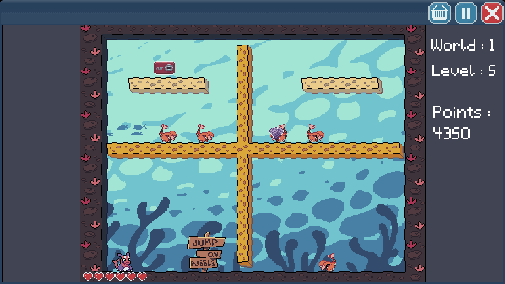
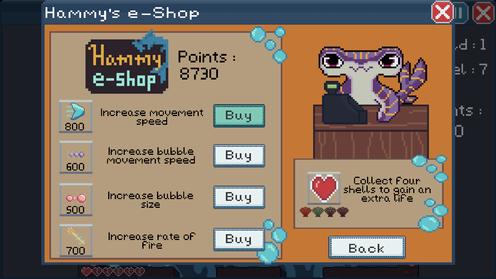
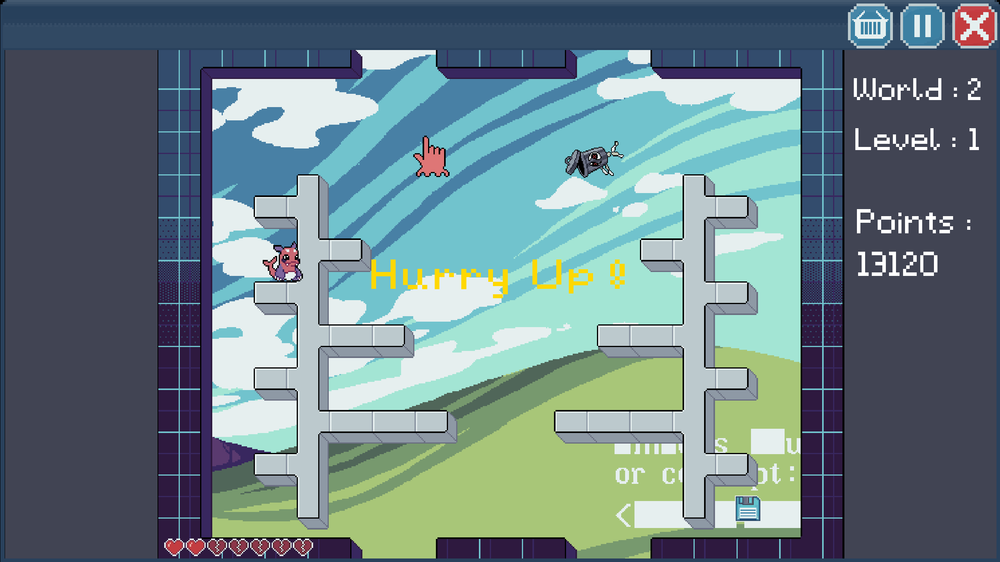

2D platformer, our own version of arcade classic Bubble Bobble with early 2000's aesthetics.
Created in: 2024
Platform: Windows
Engine: Unity
Memo Bubble is a short 2D platformer built in Unity 2022 URP for Windows, inspired by the
arcade classic Bubble Bobble and styled with early-2000s aesthetics. The game includes
three worlds with 11 levels each, focusing on platforming, score chasing, and power-up-driven
gameplay.
My main responsibilities in the project included player mechanics, item collection,
shop and power-up systems, Hurry Up mechanics, point effects, and the undefeatable enemy
functionality. I focused on implementing gameplay systems that support fast-paced movement
and increasing pressure during each level.
I implemented player controls inspired by classic Bubble Bobble, including jumping, shooting
bubbles, and popping trapped enemies, while also adding more responsive movement and the
ability to drop through platforms. I also built the item collection and shop systems,
allowing players to use collected points to buy power-ups such as movement speed and bubble
size upgrades.
  